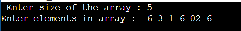
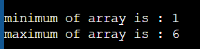

2020BTECS00209 Vaishnavi Pampatwar
Walchand College of Engineering, Sangli
Department of Computer Science and Engineering
Code
Input
Output
Variables
Complexity
Problem Statement: Write a program in any language to find the maximum and minimum element in an array.
Code
#include <stdio.h> #include <conio.h> int main() { int a[1000],i,n,min,max; printf("Enter size of the array : "); scanf("%d",&n); printf("Enter elements in array : "); for(i=0; i<n; i++) { scanf("%d",&a[i]); } min=max=a[0]; for(i=1; i<n; i++) { if(min>a[i]) min=a[i]; if(max<a[i]) max=a[i]; } printf("minimum of array is : %d",min); printf("\nmaximum of array is : %d",max); return 0; }
Input
(you can input anything)

Output

Variables Used
a
i
n
min
max
Complexity
O(n)
reference link